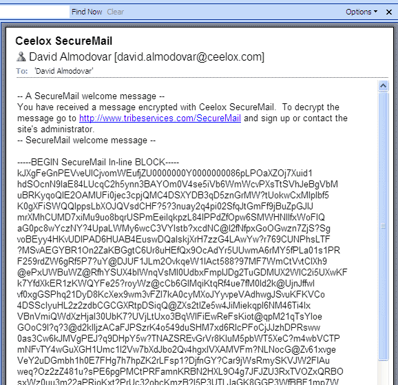

![]()
前两篇文章，我介绍了RSA算法。
今天，就接着来看，现实中怎么使用这个算法，对信息加密和解密。这要用到GnuPG软件（简称GPG），它是目前最流行、最好用的加密工具之一。
一、什么是GPG
要了解什么是GPG，就要先了解PGP。
1991年，程序员Phil Zimmermann为了避开政府监视，开发了加密软件PGP。这个软件非常好用，迅速流传开来，成了许多程序员的必备工具。但是，它是商业软件，不能自由使用。所以，自由软件基金会决定，开发一个PGP的替代品，取名为GnuPG。这就是GPG的由来。
GPG有许多用途，本文主要介绍文件加密。至于邮件的加密，不同的邮件客户端有不同的设置，请参考Ubuntu网站的介绍。
本文的使用环境为Linux命令行。如果掌握了命令行，Windows 或 Mac OS 客户端，就非常容易掌握。GPG并不难学，学会了它，从此就能轻松传递加密信息。建议读者一步步跟着教程做，对每条命令都自行测试。

二、安装
GPG有两种安装方式。可以下载源码，自己编译安装。
./configure
make
make install
也可以安装编译好的二进制包。
# Debian / Ubuntu 环境
sudo apt-get install gnupg# Fedora 环境
yum install gnupg
安装完成后，键入下面的命令：
gpg --help
如果屏幕显示GPG的帮助，就表示安装成功。
三、生成密钥
安装成功后，使用gen-ken参数生成自己的密钥。
gpg --gen-key
回车以后，会跳出一大段文字：
gpg (GnuPG) 1.4.12; Copyright (C) 2012 Free Software Foundation, Inc.
This is free software: you are free to change and redistribute it.
There is NO WARRANTY, to the extent permitted by law.请选择您要使用的密钥种类：
(1) RSA and RSA (default)
(2) DSA and Elgamal
(3) DSA (仅用于签名)
(4) RSA (仅用于签名)
您的选择？
第一段是版权声明，然后让用户自己选择加密算法。默认选择第一个选项，表示加密和签名都使用RSA算法。
然后，系统就会问你密钥的长度。
RSA 密钥长度应在 1024 位与 4096 位之间。
您想要用多大的密钥尺寸？(2048)
密钥越长越安全，默认是2048位。
接着，设定密钥的有效期。
请设定这把密钥的有效期限。
0 = 密钥永不过期
<n> = 密钥在 n 天后过期
<n>w = 密钥在 n 周后过期
<n>m = 密钥在 n 月后过期
<n>y = 密钥在 n 年后过期
密钥的有效期限是？(0)
如果密钥只是个人使用，并且你很确定可以有效保管私钥，建议选择第一个选项，即永不过期。回答完上面三个问题以后，系统让你确认。
以上正确吗？(y/n)
输入y，系统就要求你提供个人信息。
您需要一个用户标识来辨识您的密钥；本软件会用真实姓名、注释和电子邮件地址组合成用户标识，如下所示：
"Heinrich Heine (Der Dichter) <heinrichh@duesseldorf.de>"真实姓名：
电子邮件地址：
注释：
"真实姓名"填入你姓名的英文写法，"电子邮件地址"填入你的邮件地址，"注释"这一栏可以空着。
然后，你的"用户ID"生成了。
您选定了这个用户标识：
"Ruan YiFeng <yifeng.ruan@gmail.com>"
我的"真实姓名"是Ruan YiFeng，"电子邮件地址"是yifeng.ruan@gmail.com，所以我的"用户ID"就是"Ruan YiFeng <yifeng.ruan@gmail.com>"。系统会让你最后确认一次。
更改姓名(N)、注释(C)、电子邮件地址(E)或确定(O)/退出(Q)？
输入O表示"确定"。
接着，系统会让你设定一个私钥的密码。这是为了防止误操作，或者系统被侵入时有人擅自动用私钥。
您需要一个密码来保护您的私钥：
然后，系统就开始生成密钥了，这时会要求你做一些随机的举动，以生成一个随机数。
我们需要生成大量的随机字节。这个时候您可以多做些琐事(像是敲打键盘、移动鼠标、读写硬盘之类的)，这会让随机数字发生器有更好的机会获得足够的熵数。
几分钟以后，系统提示密钥已经生成了。
gpg: 密钥 EDDD6D76 被标记为绝对信任
公钥和私钥已经生成并经签名。
请注意上面的字符串"EDDD6D76"，这是"用户ID"的Hash字符串，可以用来替代"用户ID"。
这时，最好再生成一张"撤销证书"，以备以后密钥作废时，可以请求外部的公钥服务器撤销你的公钥。
gpg --gen-revoke [用户ID]
上面的"用户ID"部分，可以填入你的邮件地址或者Hash字符串（以下同）。
四、密钥管理
4.1 列出密钥
list-keys参数列出系统中已有的密钥．
gpg --list-keys
显示结果如下：
/home/ruanyf/.gnupg/pubring.gpg
-------------------------------
pub 4096R/EDDD6D76 2013-07-11
uid Ruan YiFeng <yifeng.ruan@gmail.com>
sub 4096R/3FA69BE4 2013-07-11
第一行显示公钥文件名（pubring.gpg），第二行显示公钥特征（4096位，Hash字符串和生成时间），第三行显示"用户ID"，第四行显示私钥特征。
如果你要从密钥列表中删除某个密钥，可以使用delete-key参数。
gpg --delete-key [用户ID]
4.2 输出密钥
公钥文件（.gnupg/pubring.gpg）以二进制形式储存，armor参数可以将其转换为ASCII码显示。
gpg --armor --output public-key.txt --export [用户ID]
"用户ID"指定哪个用户的公钥，output参数指定输出文件名（public-key.txt）。
类似地，export-secret-keys参数可以转换私钥。
gpg --armor --output private-key.txt --export-secret-keys
4.3 上传公钥
公钥服务器是网络上专门储存用户公钥的服务器。send-keys参数可以将公钥上传到服务器。
gpg --send-keys [用户ID] --keyserver hkp://subkeys.pgp.net
使用上面的命令，你的公钥就被传到了服务器subkeys.pgp.net，然后通过交换机制，所有的公钥服务器最终都会包含你的公钥。
由于公钥服务器没有检查机制，任何人都可以用你的名义上传公钥，所以没有办法保证服务器上的公钥的可靠性。通常，你可以在网站上公布一个公钥指纹，让其他人核对下载到的公钥是否为真。fingerprint参数生成公钥指纹。
gpg --fingerprint [用户ID]
4.4 输入密钥
除了生成自己的密钥，还需要将他人的公钥或者你的其他密钥输入系统。这时可以使用import参数。
gpg --import [密钥文件]
为了获得他人的公钥，可以让对方直接发给你，或者到公钥服务器上寻找。
gpg --keyserver hkp://subkeys.pgp.net --search-keys [用户ID]
正如前面提到的，我们无法保证服务器上的公钥是否可靠，下载后还需要用其他机制验证．
五、加密和解密
5.1 加密
假定有一个文本文件demo.txt，怎样对它加密呢？
encrypt参数用于加密。
gpg --recipient [用户ID] --output demo.en.txt --encrypt demo.txt
recipient参数指定接收者的公钥，output参数指定加密后的文件名，encrypt参数指定源文件。运行上面的命令后，demo.en.txt就是已加密的文件，可以把它发给对方。
5.2 解密
对方收到加密文件以后，就用自己的私钥解密。
gpg --decrypt demo.en.txt --output demo.de.txt
decrypt参数指定需要解密的文件，output参数指定解密后生成的文件。运行上面的命令，demo.de.txt就是解密后的文件。
GPG允许省略decrypt参数。
gpg demo.en.txt
运行上面的命令以后，解密后的文件内容直接显示在标准输出。
六、签名
6.1 对文件签名
有时，我们不需要加密文件，只需要对文件签名，表示这个文件确实是我本人发出的。sign参数用来签名。
gpg --sign demo.txt
运行上面的命令后，当前目录下生成demo.txt.gpg文件，这就是签名后的文件。这个文件默认采用二进制储存，如果想生成ASCII码的签名文件，可以使用clearsign参数。
gpg --clearsign demo.txt
运行上面的命令后 ，当前目录下生成demo.txt.asc文件，后缀名asc表示该文件是ASCII码形式的。
如果想生成单独的签名文件，与文件内容分开存放，可以使用detach-sign参数。
gpg --detach-sign demo.txt
运行上面的命令后，当前目录下生成一个单独的签名文件demo.txt.sig。该文件是二进制形式的，如果想采用ASCII码形式，要加上armor参数。
gpg --armor --detach-sign demo.txt
6.2 签名+加密
上一节的参数，都是只签名不加密。如果想同时签名和加密，可以使用下面的命令。
gpg --local-user [发信者ID] --recipient [接收者ID] --armor --sign --encrypt demo.txt
local-user参数指定用发信者的私钥签名，recipient参数指定用接收者的公钥加密，armor参数表示采用ASCII码形式显示，sign参数表示需要签名，encrypt参数表示指定源文件。
6.3 验证签名
我们收到别人签名后的文件，需要用对方的公钥验证签名是否为真。verify参数用来验证。
gpg --verify demo.txt.asc demo.txt
举例来说，openvpn网站就提供每一个下载包的gpg签名文件。你可以根据它的说明，验证这些下载包是否为真。
七、参考文档
1. Paul Heinlein, GPG Quick Start
2. Ubuntu help，GnuPrivacyGuardHowto
3. KNL, GnuPG Tutorial
4. Alan Eliasen. GPG Tutorial
（完）
 twitter
twitter![]() weibo
weibo
xfq 说：
蛮实用的，要是再讲一下gpg2就更好了。
2013年7月12日 20:17 | # | 引用
aisi 说：
觉得这篇还行，补一个《使用 GnuPG 实现电子邮件加密和数字签名——PGP 30分钟简明教程》使用搜索引擎搜一下能找到。
2013年7月13日 01:51 | # | 引用
小草元 说：
哦。公钥只能加密，而能解密的私钥自己藏好，不让第二个人知道。对吧。
2013年7月13日 12:45 | # | 引用
Melo618 说：
对方解密是不是也要用GnuPG,与PGP完全兼容吗？
2013年7月13日 16:33 | # | 引用
目艮金竟 说：
从最近三篇博文中获益匪浅，谢谢。
2013年7月16日 13:13 | # | 引用
raywang 说：
"第一行显示公钥文件名（pubring.gpg），第二行显示公钥特征（4096位，Hash字符串和生成时间），第三行显示"用户ID"，第四行显示私钥特征。"
第四行显示的应该不是私钥特征，而是那个公钥的subkey, 是用于加密的，如果用 --list-secret-keys 显示第一行 "sec xxxxx"，才应该是显示私钥特征
2013年7月16日 19:17 | # | 引用
RobberPhex 说：
建议加上如下内容：
1.修改密钥密码
2.查询自己的公钥状态（如何以第三者查询公钥）
3.如何撤销密钥
2013年7月16日 21:20 | # | 引用
互联网新资讯 说：
随机字节不够多，需要多做一些琐事，试了好几次都不够。生成密钥的时间有点长。
2013年7月17日 17:00 | # | 引用
影子 说：
获益良多，感谢分享
2013年7月23日 12:05 | # | 引用
heading 说：
谢谢！
请教:发送文件给多个收件人时加密的工作原理是怎样的？这个问题困惑我很久了。
2013年9月 8日 11:45 | # | 引用
deyu260 说：
用dd来读写硬盘 靠打字真心慢
2013年9月 9日 23:50 | # | 引用
codezyc 说：
谢谢您的分享，学习了。
2013年9月22日 12:01 | # | 引用
pczjzwok 说：
太感谢了。。真心写的很棒且通俗易懂，这里的文章我得一一拜读
2013年12月10日 21:55 | # | 引用
八戒 说：
对于甲给乙发加密消息而言，甲用从乙处获来的公钥加密，乙用私钥解密（顾客给商家发个人机密信息）。
对于消息签名而言：就是乙要确认发过来的消息是甲发的，而且消息内容没有被篡改，应该是甲用私钥将该消息的散列值进行加密成署名，而乙则通过从甲处获得的签名公钥对该署名进行解密，并与消息比较，若符合则无任何篡改，且确认是甲发过来的。
2014年1月13日 00:10 | # | 引用
z 说：
写得还是很直白明了的，但以我个人的经验，应该强调几个概念的区别。
这个文章应该是入门类的，对新手操作有指导性。而不仅是知识介绍。
我最近才接触gnupg，结果就范了一个低级错误。我把私钥密码和私钥看成一种东西了，用gpg时，一共有三个要保存的，一是私钥，这个要放在安全处，一个公钥，是用来公开的，一个是私钥密码，这个不是必须的，但要记住。我在自已电脑上生成了几个公钥，以为记住了密码在什么地方都可以用公钥和密码解密了。其实没有私钥，公钥就没有意义。如果一个新手只导出了公钥并记住了密码，有一天他重装系统，或是删了gpg，就可能无法解密他的文件了，如果他恰好把原文件删了，那被他用gpg加密的东西就全没了。好在我及时发现了自已的误解。
另一个，楼上RobberPhex提到的，对新手还是很有必要说的。如何吊销公钥，这个我以为只要把吊销证书上传服务器就可以，可这行不通，这个过程是这样的：要先在本地吊销了，再把吊销的上传到服务器。
另外，对新手来说，对广大没什么技术基础的email用户来说，直观的gpg界面要比命令符好用。上面说到的所有操作，都可以在安装了gnupg-w32cli-1.4.16.exe和装有Enigmail插件的thunderbird中完成，这个插件从密钥生成，公私钥导出，公钥下载，公钥上传，私钥密码修改到吊销公钥都可以直接用鼠标完成。我觉得它比gpg官方提供的win版gpg工具还要直观。
2014年1月16日 15:07 | # | 引用
wffger 说：
Gpg4win呢，一样是用命令行？
2014年3月 9日 16:29 | # | 引用
xinu 说：
参考中，简要，纯用型，理论少，入门快！
2014年4月29日 18:15 | # | 引用
Gym 说：
"请教:发送文件给多个收件人时加密的工作原理是怎样的？这个问题困惑我很久了。"
同问。。
2014年10月 2日 23:56 | # | 引用
maybe yes 说：
gpg.exe 在windows 下什么位置呢？
2014年10月30日 13:34 | # | 引用
lily 说：
每次加解密的时候都需要手动输入我这边的私钥保护密码，请问下有什么方法可以设置指定好这个私钥密码，不用每次加解密时都手动输入？
2014年12月15日 11:13 | # | 引用
lazyp 说：
依赖rsa这种非对称加密算法，gpg内部做了什么优化吗？或者只是一个rsa或者其他非对称加密算法的一个生成器而已？
2014年12月22日 16:09 | # | 引用
xinxin 说：
讲的很好学习了
2014年12月26日 10:47 | # | 引用
Tiger 说：
公钥加密的只能用私钥解密，私钥加密的只能用公钥解密。私钥加密的别人用公钥解开就可以证明确实是你发出的。
2015年1月18日 14:45 | # | 引用
null 说：
如此惨淡：GPG只有一个人维护，而且快破产了
http://news.cnblogs.com/n/515085/
2015年2月11日 14:59 | # | 引用
longdd 说：
gpg --send-keys [用户ID] --keyserver hkp://subkeys.pgp.net
gpg (GnuPG) 2.1.4上传公钥命令貌似有变化，要把--keyserver放在前面
gpg --keyserver hkp://subkeys.pgp.net --send-keys [用户ID]
否则报错
gpg: Note: '--keyserver' is not considered an option
gpg: "--keyserver" not a key ID: skipping
gpg: "hkp://subkeys.pgp.net" not a key ID: skipping
gpg: no keyserver known (use option --keyserver)
gpg: keyserver send failed: No keyserver available
2015年6月 2日 16:01 | # | 引用
wittyfox 说：
是，而且 gpg 各个参数还必须有一定顺序。不过 gpg 默认的有 keyserver
所以直接 gpg --send-keys UID 就可以了。
2015年6月22日 10:34 | # | 引用
markGao 说：
本人小白，刚接触GnuPG，请问GPG可以用私钥加密文件吗，加密命令是什么，请高手指教
2015年12月23日 13:25 | # | 引用
dgeibi 说：
gpg v2.1.11
gpg --send-keys UID 无效
新用法
gpg --send-keys key IDs
2016年3月19日 20:39 | # | 引用
HighGee 说：
有一种想转载的冲动
2016年4月26日 16:04 | # | 引用
chcyellow 说：
环境：xp sp3
C:\demo>git tag -u "chcchc" -s v1.0 -m "test tag"
gpg: WARNING: using insecure memory!
gpg: please see http://www.gnupg.org/documentation/faqs.html for more information
gpg: skipped "chcchc": secret key not available
gpg: signing failed: secret key not available
error: gpg failed to sign the data
error: unable to sign the tag
整了一晚上，终于发现问题所在。
将C:\Documents and Settings\chc\Application Data\gnupg下的所有文件拷到
C:\Documents and Settings\chc\.gnupg中，即可。
2016年6月21日 22:29 | # | 引用
林原 说：
你好 我在使用GPG 有一个问题想请教您 我之前电脑是32位系统，我使用GPG软件，用别人给我的KEY解密没有问题。后来我给我的系统更换为64位，其他没有变化，之前的KEY无法解密，请问这是设置的问题么？
2017年3月28日 15:20 | # | 引用
snyh 说：
https://www.gnupg.org/gph/en/manual.html#AEN111
2017年6月 6日 16:24 | # | 引用
snyh 说：
https://tools.ietf.org/html/rfc4880#section-3.7.2.2
OpenPGP 协议先使用对称加密． 然后把随机生成的passphrase放到header里后再分别使用每个接受者的public key进行非对称加密header部分．
2017年6月 6日 16:42 | # | 引用
billzbh 说：
公钥服务器有好多？ 我应该选择哪个？
hkps://hkps.pool.sks-keyservers.net
hkp://pool.sks-keyservers.net
hkp://keys.gnupg.net
hkp://pgp.mit.edu
hkp://pgp.uni-mainz.de
hkp://keyserver.linux.it
我和对方应该使用同一个公钥服务器吧，不然他搜索不到，拉取不到我的公钥，只能手动导入公钥了
2017年6月22日 10:31 | # | 引用
刘昊 说：
@billzbh：
文章里已经提过了，随便选择一个公钥服务器即可，各服务器之间会定时同步，等一段时间后其他服务器上就也有了。
2018年2月27日 14:22 | # | 引用